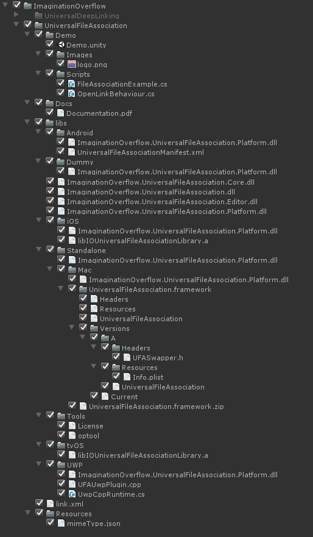
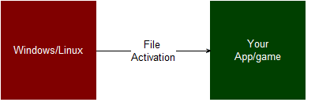
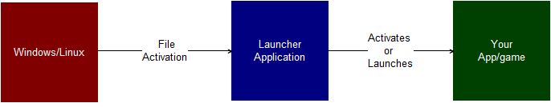

Inside the Plugin
On this section, we talk a little on how the plugin works on each platform and explain why it has some caveats on some platforms.
Overview¶

The plugin content can be found inside the folder Plugins/ImaginationOverflow/UniversalFileAssociation, making easy to install and update when required.
We included a simple Demo scene that allows you to test and play with the plugin before integrating it in your game.
Inside the libs folder os all the required dlls in order for the plugin to work:
- ImaginationOverflow.UniversalFileAssociation*.dll* - Contains the public API of the plugin
- .Core.dll - Contains the core elements of the plugin
- .Editor.dll - Contains the windows and user interface of the plugin
- .Platform.dll - Contains the specific implementation for each platform, Android, iOS, UWP and Standalone.
The Tools folder contains external tools that the plugin requires in order to work correctly, right now, the only external tool we are using is optool, required for MacOs builds.
The plugin configurations are saved under Resources/ImaginationOverflow/UniversalFileAssociation, facilitating the use of source control systems on development. This file is also required on some build targets at runtime, reason why it's directly under the Resources folder.
Runtime¶
At runtime the plugin creates a single GameObject and adds it to your current scene, this GameObject purpose is to ensure that all activation callbacks are called inside Unity main thread as well as propagate the pause events of the game to the plugin. The latter enables the plugin to refresh the activation data on some mobile platforms.
Android¶
The plugin handles all manifest registrations when you make a build, the plugin doesn't override the default activity enabling it to work with the most used plugins in the Asset Store. The File Association activation is checked everytime the game is opened or resumed.
iOS/tvOS¶
The iOS integration uses a static library libIOUniversalFileAssociationLibrary.a in order to receive information about the app activation. Just like on Android the plugin handles all registrations on the info.plist file. The library included in the plugin notifies it everytime the game was opened via a file activation.
Windows UWP (Windows Store Games)¶
Just like the previous mobile platforms, the plugin automatically configures the Package.appxmanifest file with your configuration.
In order for the plugin to work it edits the OnActivated event under App.xaml.cs, App.xaml.cpp or App.cpp depending on what Build Type (Xaml or D3D) and Scripting Backend (.NET or IL2CPP) you configure. The plugin should also work on Xbox UWP games but it was impossible to test on an actual console in order to get confirmation.
Linux and Windows¶
On Linux the file type registration is done the first time the player opens the game. To accomplish this the plugin creates a Desktop File on the player machine, enabling the operating system to set up the game as a target of a custom file type or mime type.
Windows, the game writes in the registry the information necessary to enable the OS to open the game every time the player clicks on a configured file type.
The protocol registration is also done everytime the Application.version is changed, enabling you to change the configuration with an update.
If the game build is for Steam, the plugin configures Steam to be the target of your custom file type instead of the game (this is done to work around DRM) but configures Steam to launch your game with the file that opened steam.
Linux and Windows builds (Steam or Standalone) can't be activated via a file after the game is already running. This is because the file activation information is passed via argument on the main function, making it impossible (right now at least) to get information of the file path after the game is already running. To work around this issue check the section below:
Standalone activation after launch¶
Although not included with the plugin, it's possible to work around the activation issue. In order to do that it's required that another application (Launcher application) is registered as the target for the file type and that activation is responsible to launch or notify your app or game. So instead of the normal activation flow:

It will run like the following

The Launcher application is not included in the plugin for security and liability reasons, so you would need to develop it yourself and include it on your game/app final package. We do however have an API for enabling this kind of behavior.
First off, you would need to register the launcher application instead of your app/game as the target application for the plugin, in order to facilitate that we enable you to override what we register as the file type target, your app/game executable or another application.
In order to do that, before you register your callback on the FileActivated event you need to set the DeferredExePath field with the full path of the application.
#if UNITY_STANDALONE_LINUX || UNITY_STANDALONE_WIN ImaginationOverflow.UniversalFileAssociation.FileAssociationProviderFactory.DeferredExePath = "<Launcher application full path>"; #endif ImaginationOverflow.UniversalFileAssociation.FileAssociationManager.Instance.FileActivated += FileActivatedHandler;
Then you need to implement a bridge between the Launcher application and your app/game, for this situation any common Inter Process Communication tools or APIs can be used, you can as an example use, Files, Sockets or Pipes.
Using the file polling as an example, the launcher application would write the activation file path on a file that both the launcher and your app/game knows. The game would then on set intervals check if a specific file was changed when it was changed the app/game would read it in order to get the activation file. After getting the file path the app/game could use our manual trigger API in order to activate the FileActivated event:
while(true) { if(<file was modified>) { string filePath = System.IO.File.ReadAllText(<file path>); ImaginationOverflow.UniversalFileAssociation.FileAssociationManager.Instance.ManuallyTriggerActivation(filePath, new StringReader(filePath), (ulong)new FileInfo(filePath).Length;); } }
The launcher application needs to check if the app/game is open or not before deciding which method it would use in order to send the activation data to it. If the application is not running, you can simply launch it and pass the activated file path as an argument. If the app/game is already running, you need to IPC in order to send information to the running app/game. Using the file polling example again, the launcher application code can be something like:
void Main(string[] args) { if(args.Length == 0) return; // Get the activation file path. var filePath = args[0]; // Check if your app/game is running if(Process.GetProcessesByName("<your app/game>").Length == 0) { //if not simply launch it with the file path as argument Process p = new Process(); p.StartInfo = new ProcessStartInfo("<path to app/game executable>", filePath); p.Start(); } else { // // Write in the share file the file path so that the app/game can extract it // File.WriteAllText("<Path to shared file between launcher and game>", filePath); } }
Mac¶
All manifest registrations are handled by the plugin, the file activation is deferred from our library into the game as it happens, so MacOs builds won't have the caveats that Windows and Linux have.
In order to support file activation we had to make a library (UniversalFileAssociation.framework) that would intercept the activation events of the application itself since Unity doesn't allow the plugin to automatically link a library on the build process it must be done after the build. To make that possible the plugin includes the tool optool.
optool allow us to inject the library into the game and collect all the activation events. If you build your game on MacOs the plugin will automatically call optool and inject the library. If you make the build on any other OS you will need to make an extra step, just has explained on the Getting Started Section.
This requirement exists because optool was made for MacOs and the team couldn't in useful time port it to Windows.
For more info about how the library injection works check here.